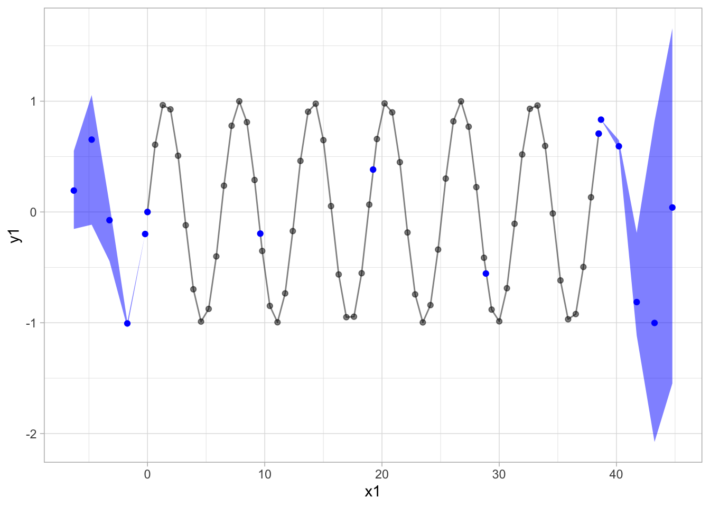
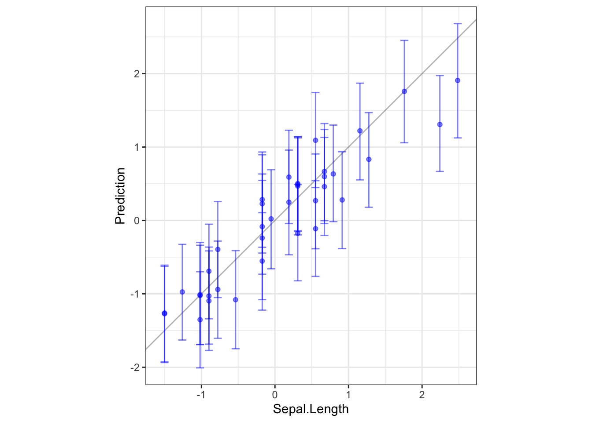

# we recommend running this is a fresh R session or restarting your current session
install.packages("cmdstanr", repos = c("https://mc-stan.org/r-packages/", getOption("repos")))library(cmdstanr)
library(posterior)
library(bayesplot)
library(tidyverse)
color_scheme_set("brightblue")set_cmdstan_path(path = "/usr/local/cmdstan-2.28.2")
cmdstan_version()GP01 <- file.path("./GP01.stan")
GP02 <- file.path("./GP02.stan")
mod01 <- cmdstan_model(GP01)
mod02 <- cmdstan_model(GP02)正弦波をガウス過程回帰で予測する。
# 正弦波をデータとして利用
sin_data <- data.frame(x=seq(0,12.25*pi,length.out = 60), y=sin(seq(0,12.25*pi,length.out = 60)))
N1 <- nrow(sin_data)
x1 <- sin_data$x
y1 <- sin_data$y
N2 <- 15
x2 <- c(seq(max(x1)+0.2, max(x1)+2*pi, length.out = 5), seq(min(x1), max(x1), length.out = 5), seq(min(x1)-2*pi, min(x1)-0.2, length.out = 5))
standata_sin <- list(N1 = N1, N2 = N2, y1 = y1, x1 = x1, x2 = x2)MCMC_sin <- mod01$sample(standata_sin,
iter_warmup = 1000,
iter_sampling = 1000,
chains = 4,
parallel_chains = 4,
refresh = 50)pred <- MCMC_sin$summary() %>%
dplyr::filter(grepl('y', variable))
plot01 <-
ggplot()+
geom_point(aes(x=x1, y=y1),alpha = 0.5)+
geom_line(aes(x=x1, y=y1),alpha = 0.5)+
geom_point(data=pred,aes(x=x2, y=mean),color="blue")+
geom_ribbon(data=pred,aes(x=x2,y=mean,ymin=q5,ymax=q95),fill="blue",alpha=0.5)+
theme_light()グレーが訓練データ、青が予測平均と95%信用区間。
内挿についてはほとんど誤差なく、外挿についても正弦波の傾向は捉えている。カーネルはRBF。
plot01
iris_data <-
as_tibble(iris) %>%
select(-Species) %>%
scale() %>%
as_tibble() %>%
mutate(ID = row_number())
# 25%をテスト用に分ける。
train <- iris_data %>% filter(ID%%4 != 0) %>% as.matrix()
test <- iris_data %>% filter(ID%%4 == 0) %>% as.matrix()
N1 <- nrow(train)
x1 <- train[,2:4]
y1 <- train[,1]
N2 <- nrow(test)
x2 <- test[,2:4]
D <- ncol(x1)
standata_iris <- list(D = D, N1 = N1, N2 = N2, y1 = y1, x1 = x1, x2 = x2)MCMC_iris <- mod02$sample(standata_iris,
iter_warmup = 1000,
iter_sampling = 1000,
chains = 4,
parallel_chains = 4,
refresh = 50)テストデータのy-yプロット(実現値と予測値のプロット)
irisのSepal.Width, Petal.Length, Petal.WidthからSepal.Lengthを予測。
yyplot_iris <- MCMC_iris$summary() %>%
dplyr::filter(grepl('y2', variable)) %>%
ggplot()+
geom_abline(slope=1, intercept=0, alpha = 0.3)+
geom_point(aes(x=test[,1], y=mean), color = "blue", alpha=0.5)+
geom_errorbar(aes(x=test[,1], y=mean,ymin=q5, ymax=q95), alpha=0.5, color = "blue")+
coord_fixed()+
xlab("Sepal.Length")+
ylab("Prediction")+
theme_bw()テストデータのy-yプロット(実現値と予測値のプロット)
irisのSepal.Width, Petal.Length, Petal.WidthからSepal.Lengthを予測。
yyplot_iris
mod01$print()## //
## // This Stan program defines a simple model, with a
## // vector of values 'y' modeled as normally distributed
## // with mean 'mu' and standard deviation 'sigma'.
## //
## // Learn more about model development with Stan at:
## //
## // http://mc-stan.org/users/interfaces/rstan.html
## // https://github.com/stan-dev/rstan/wiki/RStan-Getting-Started
## //
## // ガウス過程回帰 入力１次元ver.
##
## data {
## int<lower=1> N1;
## int<lower=1> N2;
## vector[N1] x1;
## vector[N1] y1;
## vector[N2] x2;
## }
##
## transformed data {
## int<lower=1> N = N1 + N2;
## vector[N] x;
## vector[N] Mu;
## real vx;
## real delta = 1e-4;
##
## for (n in 1:N1) x[n] = x1[n];
## for (n in 1:N2) x[N1 + n] = x2[n];
## for (i in 1:N) Mu[i] = 0;
## vx = variance(x);
## }
##
## parameters {
## vector[N2] y2;
## vector<lower=0>[3] theta;
##
## }
##
## model {
## matrix[N, N] Cov;
## vector[N] y;
## for (n in 1:N1) y[n] = y1[n];
## for (n in 1:N2) y[N1 + n] = y2[n];
##
## // RBFカーネル
## for (i in 1:N)
## for (j in 1:N)
## Cov[i,j] = theta[1]*exp(-pow(x[i] - x[j],2)/(theta[2]*vx)) + (i==j ? theta[3] : 0.0);
##
## // Cauchyカーネル
## //for (i in 1:N)
## //for (j in 1:N)
## //Cov[i,j] = theta[1]*(1/(1 + theta[2]*pow(x[i] - x[j],2)/vx)) + (i==j ? theta[3] : 0.0);
##
##
## y ~ multi_normal(Mu, Cov);
## theta ~ normal(0,1);
## }mod02$print()## //
## // This Stan program defines a simple model, with a
## // vector of values 'y' modeled as normally distributed
## // with mean 'mu' and standard deviation 'sigma'.
## //
## // Learn more about model development with Stan at:
## //
## // http://mc-stan.org/users/interfaces/rstan.html
## // https://github.com/stan-dev/rstan/wiki/RStan-Getting-Started
## //
## // ガウス過程回帰 入力多次元ver.
##
## data {
## int N1;
## int D;
## vector[D] x1[N1];
## vector[N1] y1;
## int N2;
## vector[D] x2[N2];
## }
## transformed data {
## real delta = 1e-9;
## int N = N1 + N2;
## vector[D] x[N];
## for (n1 in 1:N1) x[n1] = x1[n1];
## for (n2 in 1:N2) x[N1 + n2] = x2[n2];
## }
## parameters {
## real<lower=0> rho;
## real<lower=0> alpha;
## real<lower=0> sigma;
## vector[N] eta;
## }
## transformed parameters {
## vector[N] f;
## {
## matrix[N, N] L_K;
## matrix[N, N] K = cov_exp_quad(x, alpha, rho);
## // diagonal elements
## for (n in 1:N)
## K[n, n] = K[n, n] + delta;
## L_K = cholesky_decompose(K);
## f = L_K * eta;
## }
## }
## model {
## rho ~ inv_gamma(5, 5);
## alpha ~ normal(0, 1);
## sigma ~ normal(0, 1);
## eta ~ normal(0, 1);
## y1 ~ normal(f[1:N1], sigma);
## }
## generated quantities {
## vector[N2] y2;
## for (n2 in 1:N2)
## y2[n2] = normal_rng(f[N1 + n2], sigma);
## }